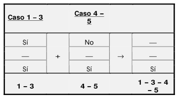

Evaluaremos la imagen del punto inicial y si resulta inferior o igual al valor admisible e, daremos por resuelto el problema. En caso contrario, evaluaremos si hemos llegado al número máximo de iteraciones, y si no es así, volveremos a repetir el proceso para un valor a evaluar igual al anterior más el intervalo de búsqueda. Por último haremos este esquema reflejo de todo lo anterior.

Importe = Precio unitario x Cantidad x Descuento
Supongamos a su vez dos formas de pago: con tarjeta oro (15% de descuento) y con tarjeta club (5% de descuento). El planteamiento sería:
Para construir una tabla de decisión partiremos de una tabla dividida en cuatro zonas: lista de condiciones, cumplimiento de condiciones, lista de acciones y acciones a realizar.


El número de casos que tendremos es 2 n , siendo n el número de condiciones. En el ejemplo anterior tenemos dos condiciones y 2 n = 2 2 = 4 casos, que son Sí-Sí, Sí-No, No-Sí y No-No. Para construir la zona 2 o de cumplimiento de condiciones seguiremos la siguiente estrategia:
• Primero la columna con todo Sí.Ejemplo: Problema con 4 condiciones. ¿Cuántos casos tendremos? 2 4 = 16 casos.
Ejemplo: Se quiere determinar el importe a facturar a los clientes de unos grandes almacenes según estos criterios:
• Si pagan con tarjeta oro tendrán un 15% de descuento.El número de condiciones es 3 y el numero de casos 8, que es 2 3, por lo que en principio todo está correcto. En la hipótesis de que haya un mecanismo de bloqueo que impidiera que se dieran los casos inviables (1, 2 y 5) podríamos eliminarlos y simplificar la tabla de decisión, que quedaría:
Ejemplo: Se quiere determinar la nómina de los empleados de una empresa de acuerdo con estos criterios:
• Si el empleado es altamente productivo tendrá en nómina un plus de productividad.
Los casos 1, 3, 4 y 5 dan lugar al mismo resultado, por lo que vamos a tratar de simplificar la tabla. Para ello sumaremos casos de dos en dos, agrupando aquellos cuyo cumplimiento de condiciones coincida en todos menos en un parámetro. Dicho parámetro se transformará en un ⎯ , equivalente a indiferente o Sí/No.
Ejemplos: (sólo aplicables en casos que puedan dar lugar al mismo resultado).

Téngase en cuenta que una indiferencia equivale a dos casos, dos indiferencias a cuatro casos, tres indiferencias a ocho casos, etc. Para introducir una segunda indiferencia hemos, por lo tanto, de estudiar cuatro casos.
En el análisis del apartado f vemos que se trata de cuatro condiciones, de las cuales la primera y la tercera están fijadas en sí. Así pues nos quedamos con las dos condiciones variantes que suponen estos cuatro casos:
Analizamos qué ocurre en función del resultado del caso 4:
a) Resultado del caso 4 = Resultado A.


Volvemos a tener dos casos (el 1 - 3 y el 4 - 5) con el mismo resultado y trataremos de simplificar, considerando el guión como un signo de iguales propiedades al Sí/No a efectos de la suma. Por lo tanto:
Esta simplificación podríamos haberla hecho directamente a continuación de la otra (aquí se ha vuelto a construir la tabla para exponer el proceso paso a paso). La tabla resultante sería:

En un problema complejo se puede recurrir a insertar una tabla de decisión dentro de otra. Para ello una o varias de las acciones a realizar se marcarán con Tn, siendo esto indicación de: “acudir a la tabla número n”.
Si una acción remitiera a la tabla 1 se trataría de un anidamiento. Esto es admisible sólo si antes de que se remita a la tabla se ha producido un cambio en las condiciones que dé lugar a un caso sin anidamiento, de lo contrario se trataría de un proceso circular infinito y una tabla mal construida.